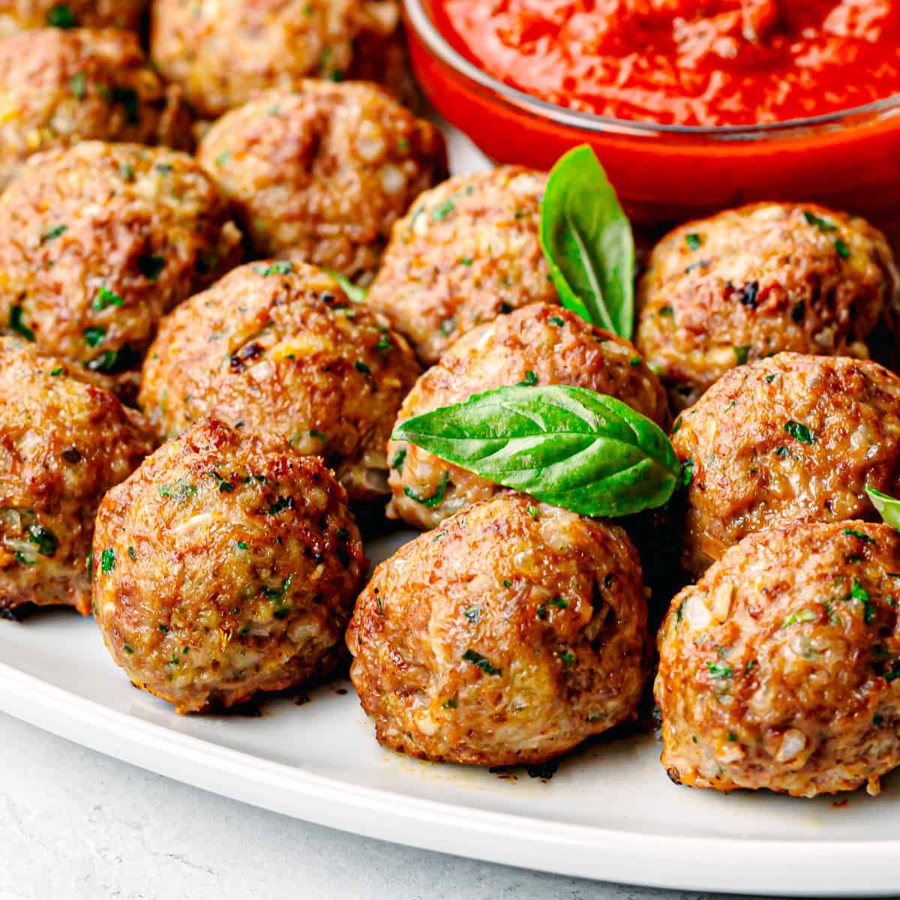

Meatballs

Meatballs Description
Meatballs are delicious balls of meat. Eat them now.
And I mean now....
Ingredients
- 1lb ground chuck
- 1 egg
- bread crumbs
- parmesan cheese
- garlic
- oregano
- parsley
- water
- pasta sauce
Steps
- Pour the pasta sauce into a pot on low heat
- crush the garlic cloves and mix them into the meat in a big bowl
- crack the egg and whisk the yolk in a bowl
- mix the water, breadcrumbs, parsley, and oregano together in a bowl
- add the 2 bowls to the meat
- add parmesan to the big bowl
- mix all the ingredients together
- using your hands, knead and mix the meat to tenderize it until you feel you have done enough
- roll the meat into small balls and remove the garlic cloves
- add the meatballs to the pasta sauce pot and let cook
- serve the meatballs straight out of the pot